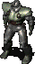

Guardian Of Forever
Description
Guardian of Forever is a FOnline 2 version of a Fallout 2 special encounter. Much like Fallout 2, you get to go back in time and mess around. This encounter is one of the most wanted, as not only is it a cool one, its also highly rewarding, it is the only place in the game where you can get a Turbo Plasma Rifle other than dungeons and crafting.
After spawning you will be moved to typical wasteland area. Typical one -> cacti, sand and more sand, all of this being nothing unusual - with one exception: Huge Stone Monolith in the middle of the map. Go straight through it, When you pass through the middle of the monolith you will be dragged into seemingly another dimension and time.
Welcome to the battlefield, to the Test Vault that is placed under Cathedral, to heart of unity, to the final level Fallout 1. Right now its a graveyard - when traveling through this battle zone you will notice a lot of bodies. Somebody was definitely having a lot of sadistic "fun" here. Try to loot some containers, they should be spawning some minor loot, some of them is protected by weak lock. As far as I know there is no loot on bodies, but hey knowing most Wastelanders in this game you will check it up anyway.
Once you're done with browsing through regular places its time for grand final boss. Go to the hidden corridor on right side, to the master lair. In that place you will find him. A man in power armor, holding a Turbo Plasma Rifle, a man wearing mirrored shades. A man covered in wounds, the killer of master. You might know him as the Vault Dweller, Furf Buckaroo, Timmy Timetangled, John Smith, Xsarq, or Smitty Werbenjagermanjensen for my case. "He was number #1!"
No matter what you say, no matter what you do a combat will start, although your enemy is powerful, is also badly wounded, so try to finish the clash quickly.
While i believe most of loot here is random, you will always find following things on the Vault Loner body: Mirrored Shades, Iguana on a Stick, 13x Stimpaks, RadAway, 2x Buffout, V13 Water Flask,T51b Technical Manual, Lighter, Radio, 2343 caps, 6x super stimapaks,Vault Jumpsuit, 140x Micro Fusions cells and a Turbo Plasma Rifle!
In order to leave just move further into master lair. When you get to close the game will teleport you back to the desert encounter. The stone portal is offering only one ride though, after that it will become inactive.
Note: Since Vault Dweller life is like 50/300 (or something similar) when you enter this encounter its advised to move swiftly - the longer you stay on opening lockers and sightseeing in vault the more HP regenerates on Vault Dweller, due to natural healing rate. At some point it might gets really hard to win.
Dialog Log
| Spoilers Ahead! |
|---|
|
|
Connections
| Spoilers Ahead! |
|---|
|
This special encounter is an throwback to Fallout 2 special encounter. In that one you moved back in time to Vault 13, when on level 3 you would broke the water managing system, so this way the vault would need a brand new water chip. The whole idea of encounter originally comes from Star Trek from episode called:"The City on the Edge of Forever". |
Enemies
| Choosen One | Vital Statistics | Resistances (DT/DR) | Notes | ||||||||||||||||||
|---|---|---|---|---|---|---|---|---|---|---|---|---|---|---|---|---|---|---|---|---|---|
|  |
|
|
Look's tough? Don't worry he's heavily wounded. If you won't waste too much time in this encounter you should fight with him very close to death. | ||||||||||||||||||
Encounter Map
A Stone portal.
Place: Lvl 3 of test Vault, under the Cathedral, Time: Few seconds after the final battle...
Points of interest
- c - Container Some of them might be locked. They spawn random items. Nothing specially interesting though.
- L - Locked Object In case of doors: You don't have to lock pick it, you can just...you know choose the second doors, in case of containers: opening them might be a good idea, there might be some loot helpful in fighting against the Choose one.
The elevators are not working. The computers are not working. The bodies are probably empty.
| Fonline 2 Special Locations: | ||
|---|---|---|
| Special Encounters: | * A Cave In The Mountains * An Old Hospital * Caravan's Encampment * Crashed Saucer * Deset Water Tower * Giant Head * Guardian Of Forever * Khans Hideout * Overturned Nuka Cola Truck * Rusting Hulk * Small Village * Smoking Ruins * Unusual Call Box | |